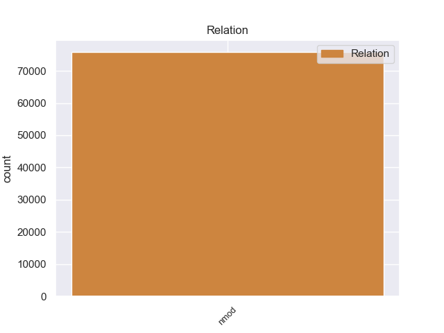
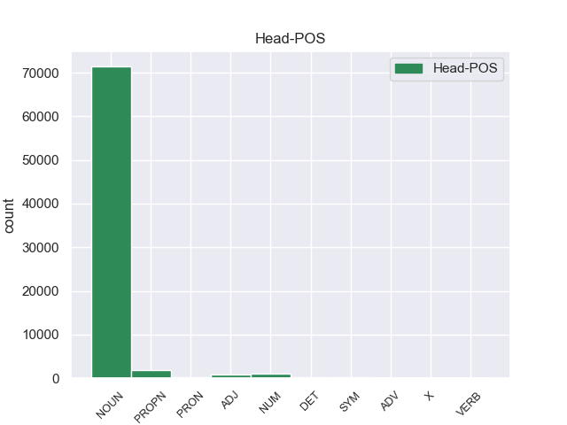
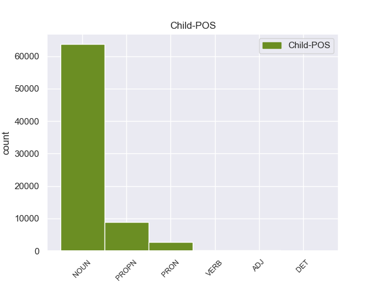

Distribution of features within this leaf



Morphosyntax Rules sorted by frequency.
- When the dependent token is the nominal modifier(nmod) of the head token, and the head token is NOUN the Case needs to be Gen.
1 Недаром _ _ _ _ 0 _ _ _
2 же _ _ _ _ 0 _ _ _
3 у _ _ _ _ 0 _ _ _
4 очкастого _ _ _ _ 0 _ _ _
5 мальчика мальчик NOUN _ Animacy=Anim|Case=Gen|Gender=Masc|Number=Sing 10 nmod 10:nmod _
6 руки _ _ _ _ 0 _ _ _
7 были _ _ _ _ 0 _ _ _
8 в _ _ _ _ 0 _ _ _
9 кровяных _ _ _ _ 0 _ _ _
10 ссадинах ссадина NOUN _ Animacy=Inan|Case=Loc|Gender=Fem|Number=Plur 0 _ _ _
11 . _ _ _ _ 0 _ _ _
1 Но _ _ _ _ 0 _ _ _
2 зато _ _ _ _ 0 _ _ _
3 сколько _ _ _ _ 0 _ _ _
4 их _ _ _ _ 0 _ _ _
5 было _ _ _ _ 0 _ _ _
6 потом _ _ _ _ 0 _ _ _
7 , _ _ _ _ 0 _ _ _
8 сколько _ _ _ _ 0 _ _ _
9 верст _ _ _ _ 0 _ _ _
10 проделал _ _ _ _ 0 _ _ _
11 я _ _ _ _ 0 _ _ _
12 по _ _ _ _ 0 _ _ _
13 следам _ _ _ _ 0 _ _ _
14 отца _ _ _ _ 0 _ _ _
15 : _ _ _ _ 0 _ _ _
16 далекий _ _ _ _ 0 _ _ _
17 Иркутск _ _ _ _ 0 _ _ _
18 , _ _ _ _ 0 _ _ _
19 душный _ _ _ _ 0 _ _ _
20 , _ _ _ _ 0 _ _ _
21 пропыленный _ _ _ _ 0 _ _ _
22 Саратов _ _ _ _ 0 _ _ _
23 , _ _ _ _ 0 _ _ _
24 первое _ _ _ _ 0 _ _ _
25 чудо _ _ _ _ 0 _ _ _
26 Ленинграда _ _ _ _ 0 _ _ _
27 , _ _ _ _ 0 _ _ _
28 забытый _ _ _ _ 0 _ _ _
29 богом _ _ _ _ 0 _ _ _
30 Егорьевск _ _ _ _ 0 _ _ _
31 , _ _ _ _ 0 _ _ _
32 Кандалакша Кандалакша PROPN _ Animacy=Inan|Case=Nom|Gender=Fem|Number=Sing 0 _ _ _
33 среди _ _ _ _ 0 _ _ _
34 поросших _ _ _ _ 0 _ _ _
35 карликовыми _ _ _ _ 0 _ _ _
36 соснами _ _ _ _ 0 _ _ _
37 сопок сопка NOUN _ Animacy=Inan|Case=Gen|Gender=Fem|Number=Plur 32 nmod 32:nmod _
38 и _ _ _ _ 0 _ _ _
39 похожих _ _ _ _ 0 _ _ _
40 на _ _ _ _ 0 _ _ _
41 осколки _ _ _ _ 0 _ _ _
42 зеркала _ _ _ _ 0 _ _ _
43 озер _ _ _ _ 0 _ _ _
44 , _ _ _ _ 0 _ _ _
45 край _ _ _ _ 0 _ _ _
46 , _ _ _ _ 0 _ _ _
47 разлинованный _ _ _ _ 0 _ _ _
48 , _ _ _ _ 0 _ _ _
49 как _ _ _ _ 0 _ _ _
50 ученическая _ _ _ _ 0 _ _ _
51 тетрадь _ _ _ _ 0 _ _ _
52 , _ _ _ _ 0 _ _ _
53 рядами _ _ _ _ 0 _ _ _
54 колючей _ _ _ _ 0 _ _ _
55 проволоки _ _ _ _ 0 _ _ _
56 , _ _ _ _ 0 _ _ _
57 страшная _ _ _ _ 0 _ _ _
58 Рохма _ _ _ _ 0 _ _ _
59 … _ _ _ _ 0 _ _ _
1 Дети _ _ _ _ 0 _ _ _
2 любят _ _ _ _ 0 _ _ _
3 играть _ _ _ _ 0 _ _ _
4 в _ _ _ _ 0 _ _ _
5 куплю _ _ _ _ 0 _ _ _
6 - _ _ _ _ 0 _ _ _
7 продажу _ _ _ _ 0 _ _ _
8 , _ _ _ _ 0 _ _ _
9 инстинкт _ _ _ _ 0 _ _ _
10 торговли _ _ _ _ 0 _ _ _
11 , _ _ _ _ 0 _ _ _
12 мены _ _ _ _ 0 _ _ _
13 , _ _ _ _ 0 _ _ _
14 наверное _ _ _ _ 0 _ _ _
15 , _ _ _ _ 0 _ _ _
16 один один NUM _ Case=Nom|Gender=Masc 0 _ _ _
17 из _ _ _ _ 0 _ _ _
18 древнейших _ _ _ _ 0 _ _ _
19 человеческих _ _ _ _ 0 _ _ _
20 инстинктов инстинкт NOUN _ Animacy=Inan|Case=Gen|Gender=Masc|Number=Plur 16 nmod 16:nmod SpaceAfter=No
21 . _ _ _ _ 0 _ _ _
1 Я _ _ _ _ 0 _ _ _
2 вытряхнул _ _ _ _ 0 _ _ _
3 грибы _ _ _ _ 0 _ _ _
4 из _ _ _ _ 0 _ _ _
5 рубашки _ _ _ _ 0 _ _ _
6 и _ _ _ _ 0 _ _ _
7 надел _ _ _ _ 0 _ _ _
8 ее _ _ _ _ 0 _ _ _
9 на _ _ _ _ 0 _ _ _
10 себя _ _ _ _ 0 _ _ _
11 , _ _ _ _ 0 _ _ _
12 безнадежно _ _ _ _ 0 _ _ _
13 замаранную _ _ _ _ 0 _ _ _
14 , _ _ _ _ 0 _ _ _
15 приятно _ _ _ _ 0 _ _ _
16 и _ _ _ _ 0 _ _ _
17 остро _ _ _ _ 0 _ _ _
18 пахучую пахучий ADJ _ Case=Acc|Degree=Pos|Gender=Fem|Number=Sing 0 _ _ _
19 от _ _ _ _ 0 _ _ _
20 свинушек свинушка NOUN _ Animacy=Inan|Case=Gen|Gender=Fem|Number=Plur 18 nmod 18:nmod SpaceAfter=No
21 , _ _ _ _ 0 _ _ _
22 и _ _ _ _ 0 _ _ _
23 двинулся _ _ _ _ 0 _ _ _
24 дальше _ _ _ _ 0 _ _ _
25 . _ _ _ _ 0 _ _ _
1 За _ _ _ _ 0 _ _ _
2 10 _ _ _ _ 0 _ _ _
3 минут _ _ _ _ 0 _ _ _
4 захватывается _ _ _ _ 0 _ _ _
5 более _ _ _ _ 0 _ _ _
6 90 _ _ _ _ 0 _ _ _
7 % % SYM _ _ 0 _ _ _
8 урана уран NOUN _ Animacy=Inan|Case=Gen|Gender=Masc|Number=Sing 7 nmod 7:nmod SpaceAfter=No
9 , _ _ _ _ 0 _ _ _
10 но _ _ _ _ 0 _ _ _
11 в _ _ _ _ 0 _ _ _
12 реальных _ _ _ _ 0 _ _ _
13 условиях _ _ _ _ 0 _ _ _
14 промышленного _ _ _ _ 0 _ _ _
15 процесса _ _ _ _ 0 _ _ _
16 такой _ _ _ _ 0 _ _ _
17 длительный _ _ _ _ 0 _ _ _
18 контакт _ _ _ _ 0 _ _ _
19 протекающей _ _ _ _ 0 _ _ _
20 воды _ _ _ _ 0 _ _ _
21 с _ _ _ _ 0 _ _ _
22 гранулами _ _ _ _ 0 _ _ _
23 исключается _ _ _ _ 0 _ _ _
24 . _ _ _ _ 0 _ _ _
1 Казалось _ _ _ _ 0 _ _ _
2 , _ _ _ _ 0 _ _ _
3 каждый каждый DET _ Case=Nom|Gender=Masc|Number=Sing 0 _ _ _
4 из _ _ _ _ 0 _ _ _
5 них они PRON _ Case=Gen|Number=Plur|Person=3 3 nmod 3:nmod _
6 заключен _ _ _ _ 0 _ _ _
7 в _ _ _ _ 0 _ _ _
8 прозрачную _ _ _ _ 0 _ _ _
9 до _ _ _ _ 0 _ _ _
10 незримости _ _ _ _ 0 _ _ _
11 оболочку _ _ _ _ 0 _ _ _
12 , _ _ _ _ 0 _ _ _
13 проницаемую _ _ _ _ 0 _ _ _
14 лишь _ _ _ _ 0 _ _ _
15 для _ _ _ _ 0 _ _ _
16 им _ _ _ _ 0 _ _ _
17 подобных _ _ _ _ 0 _ _ _
18 . _ _ _ _ 0 _ _ _
1 Жаль _ _ _ _ 0 _ _ _
2 , _ _ _ _ 0 _ _ _
3 что _ _ _ _ 0 _ _ _
4 никому никто PRON _ Case=Dat 0 _ _ _
5 из _ _ _ _ 0 _ _ _
6 них они PRON _ Case=Gen|Number=Plur|Person=3 4 nmod 4:nmod _
7 не _ _ _ _ 0 _ _ _
8 приходит _ _ _ _ 0 _ _ _
9 мысль _ _ _ _ 0 _ _ _
10 спросить _ _ _ _ 0 _ _ _
11 меня _ _ _ _ 0 _ _ _
12 … _ _ _ _ 0 _ _ _
1 Другим _ _ _ _ 0 _ _ _
2 , _ _ _ _ 0 _ _ _
3 еще _ _ _ _ 0 _ _ _
4 более _ _ _ _ 0 _ _ _
5 гибким _ _ _ _ 0 _ _ _
6 способом _ _ _ _ 0 _ _ _
7 работы _ _ _ _ 0 _ _ _
8 с _ _ _ _ 0 _ _ _
9 веб _ _ _ _ 0 _ _ _
10 - _ _ _ _ 0 _ _ _
11 пауками _ _ _ _ 0 _ _ _
12 стали _ _ _ _ 0 _ _ _
13 метатеги _ _ _ _ 0 _ _ _
14 , _ _ _ _ 0 _ _ _
15 прописываемые _ _ _ _ 0 _ _ _
16 в _ _ _ _ 0 _ _ _
17 шапке _ _ _ _ 0 _ _ _
18 html html X _ Foreign=Yes 0 _ _ _
19 - _ _ _ _ 0 _ _ _
20 кода _ _ _ _ 0 _ _ _
21 каждой _ _ _ _ 0 _ _ _
22 сетевой _ _ _ _ 0 _ _ _
23 страницы страница NOUN _ Animacy=Inan|Case=Gen|Gender=Fem|Number=Sing 18 nmod 18:nmod SpaceAfter=No
24 . _ _ _ _ 0 _ _ _
1 По _ _ _ _ 0 _ _ _
2 существу _ _ _ _ 0 _ _ _
3 , _ _ _ _ 0 _ _ _
4 они _ _ _ _ 0 _ _ _
5 оказались _ _ _ _ 0 _ _ _
6 в _ _ _ _ 0 _ _ _
7 условиях _ _ _ _ 0 _ _ _
8 горячего _ _ _ _ 0 _ _ _
9 цеха _ _ _ _ 0 _ _ _
10 , _ _ _ _ 0 _ _ _
11 и _ _ _ _ 0 _ _ _
12 , _ _ _ _ 0 _ _ _
13 очевидно _ _ _ _ 0 _ _ _
14 , _ _ _ _ 0 _ _ _
15 мало мало ADV _ Degree=Pos 0 _ _ _
16 кто _ _ _ _ 0 _ _ _
17 из _ _ _ _ 0 _ _ _
18 них они PRON _ Case=Gen|Number=Plur|Person=3 15 nmod 15:nmod _
19 знал _ _ _ _ 0 _ _ _
20 азы _ _ _ _ 0 _ _ _
21 борьбы _ _ _ _ 0 _ _ _
22 с _ _ _ _ 0 _ _ _
23 гиподинамией _ _ _ _ 0 _ _ _
24 . _ _ _ _ 0 _ _ _
1 Другое _ _ _ _ 0 _ _ _
2 дело _ _ _ _ 0 _ _ _
3 , _ _ _ _ 0 _ _ _
4 что _ _ _ _ 0 _ _ _
5 важнейшие _ _ _ _ 0 _ _ _
6 фигуры _ _ _ _ 0 _ _ _
7 - _ _ _ _ 0 _ _ _
8 глава _ _ _ _ 0 _ _ _
9 администрации _ _ _ _ 0 _ _ _
10 Волошин _ _ _ _ 0 _ _ _
11 , _ _ _ _ 0 _ _ _
12 премьер _ _ _ _ 0 _ _ _
13 Касьянов _ _ _ _ 0 _ _ _
14 , _ _ _ _ 0 _ _ _
15 министр _ _ _ _ 0 _ _ _
16 МВД _ _ _ _ 0 _ _ _
17 Рушайло _ _ _ _ 0 _ _ _
18 , _ _ _ _ 0 _ _ _
19 и. и VERB _ _ 0 _ _ _
20 о. _ _ _ _ 0 _ _ _
21 прокурора прокурор NOUN _ Animacy=Anim|Case=Gen|Gender=Masc|Number=Sing 19 nmod 19:nmod _
22 Устинов _ _ _ _ 0 _ _ _
23 , _ _ _ _ 0 _ _ _
24 - _ _ _ _ 0 _ _ _
25 были _ _ _ _ 0 _ _ _
26 классическими _ _ _ _ 0 _ _ _
27 " _ _ _ _ 0 _ _ _
28 попутчиками _ _ _ _ 0 _ _ _
29 " _ _ _ _ 0 _ _ _
30 . _ _ _ _ 0 _ _ _
non-conforming Examples:
1 Начальник _ _ _ _ 0 _ _ _
2 областного _ _ _ _ 0 _ _ _
3 управления _ _ _ _ 0 _ _ _
4 связи _ _ _ _ 0 _ _ _
5 Семен _ _ _ _ 0 _ _ _
6 Еремеевич _ _ _ _ 0 _ _ _
7 был _ _ _ _ 0 _ _ _
8 человек _ _ _ _ 0 _ _ _
9 простой _ _ _ _ 0 _ _ _
10 , _ _ _ _ 0 _ _ _
11 приходил _ _ _ _ 0 _ _ _
12 на _ _ _ _ 0 _ _ _
13 работу _ _ _ _ 0 _ _ _
14 всегда _ _ _ _ 0 _ _ _
15 вовремя _ _ _ _ 0 _ _ _
16 , _ _ _ _ 0 _ _ _
17 здоровался _ _ _ _ 0 _ _ _
18 с _ _ _ _ 0 _ _ _
19 секретаршей _ _ _ _ 0 _ _ _
20 за _ _ _ _ 0 _ _ _
21 руку _ _ _ _ 0 _ _ _
22 и _ _ _ _ 0 _ _ _
23 иногда _ _ _ _ 0 _ _ _
24 даже _ _ _ _ 0 _ _ _
25 писал _ _ _ _ 0 _ _ _
26 в _ _ _ _ 0 _ _ _
27 стенгазету _ _ _ _ 0 _ _ _
28 заметки _ _ _ _ 0 _ _ _
29 под _ _ _ _ 0 _ _ _
30 псевдонимом псевдоним NOUN _ Animacy=Inan|Case=Ins|Gender=Masc|Number=Sing 0 _ _ _
31 " _ _ _ _ 0 _ _ _
32 Муха муха NOUN _ Animacy=Anim|Case=Nom|Gender=Fem|Number=Sing 30 nmod 30:nmod SpaceAfter=No
33 " _ _ _ _ 0 _ _ _
34 . _ _ _ _ 0 _ _ _
1 У _ _ _ _ 0 _ _ _
2 двери _ _ _ _ 0 _ _ _
3 стоял _ _ _ _ 0 _ _ _
4 стол _ _ _ _ 0 _ _ _
5 секретарши _ _ _ _ 0 _ _ _
6 , _ _ _ _ 0 _ _ _
7 на _ _ _ _ 0 _ _ _
8 столе _ _ _ _ 0 _ _ _
9 - _ _ _ _ 0 _ _ _
10 пишущая _ _ _ _ 0 _ _ _
11 машинка машинка NOUN _ Animacy=Inan|Case=Nom|Gender=Fem|Number=Sing 0 _ _ _
12 с _ _ _ _ 0 _ _ _
13 широкой _ _ _ _ 0 _ _ _
14 кареткой каретка NOUN _ Animacy=Inan|Case=Ins|Gender=Fem|Number=Sing 11 nmod 11:nmod SpaceAfter=No
15 . _ _ _ _ 0 _ _ _
1 В _ _ _ _ 0 _ _ _
2 глубине _ _ _ _ 0 _ _ _
3 стоял _ _ _ _ 0 _ _ _
4 широкий _ _ _ _ 0 _ _ _
5 письменный _ _ _ _ 0 _ _ _
6 стол стол NOUN _ Animacy=Inan|Case=Nom|Gender=Masc|Number=Sing 0 _ _ _
7 с _ _ _ _ 0 _ _ _
8 бронзовыми _ _ _ _ 0 _ _ _
9 чернильницами чернильница NOUN _ Animacy=Inan|Case=Ins|Gender=Fem|Number=Plur 6 nmod 6:nmod _
10 и _ _ _ _ 0 _ _ _
11 перед _ _ _ _ 0 _ _ _
12 ним _ _ _ _ 0 _ _ _
13 два _ _ _ _ 0 _ _ _
14 кожаных _ _ _ _ 0 _ _ _
15 кресла _ _ _ _ 0 _ _ _
16 . _ _ _ _ 0 _ _ _
1 В _ _ _ _ 0 _ _ _
2 тот _ _ _ _ 0 _ _ _
3 день _ _ _ _ 0 _ _ _
4 , _ _ _ _ 0 _ _ _
5 с _ _ _ _ 0 _ _ _
6 которого _ _ _ _ 0 _ _ _
7 начинается _ _ _ _ 0 _ _ _
8 наш _ _ _ _ 0 _ _ _
9 рассказ _ _ _ _ 0 _ _ _
10 , _ _ _ _ 0 _ _ _
11 жизнь жизнь NOUN _ Animacy=Inan|Case=Nom|Gender=Fem|Number=Sing 0 _ _ _
12 в _ _ _ _ 0 _ _ _
13 приемной приемная NOUN _ Animacy=Inan|Case=Loc|Gender=Fem|Number=Sing 11 nmod 11:nmod _
14 протекала _ _ _ _ 0 _ _ _
15 обычно _ _ _ _ 0 _ _ _
16 . _ _ _ _ 0 _ _ _
1 Молодая _ _ _ _ 0 _ _ _
2 женщина женщина NOUN _ Animacy=Anim|Case=Nom|Gender=Fem|Number=Sing 0 _ _ _
3 в _ _ _ _ 0 _ _ _
4 кокетливой _ _ _ _ 0 _ _ _
5 шляпке шляпка NOUN _ Animacy=Inan|Case=Loc|Gender=Fem|Number=Sing 2 nmod 2:nmod _
6 прошла _ _ _ _ 0 _ _ _
7 в _ _ _ _ 0 _ _ _
8 кабинет _ _ _ _ 0 _ _ _
9 . _ _ _ _ 0 _ _ _